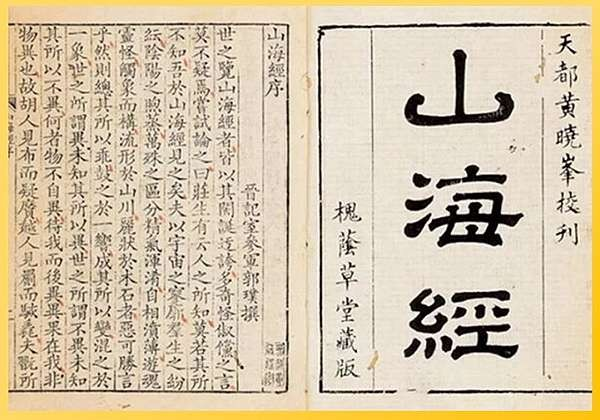

神獸出處──《山海經》


圖源:我讀《山海經》
尚氣裡的神獸大部分來自中國古籍《山海經》是西元前475年，距今大約2496年前先秦時代出版的書。其內容稀奇怪誕，不只是講述地理山川，更鋪述奇山險地存在何種奇禽魔獸，涉及巫術、宗教、歷史、民俗、風土、礦藏……等等面向。其書作者不詳，或託名大禹、伯益。
清代主持編纂《續資治通鑑》的學者畢沅曾說此書：「作於禹益，述於周秦，行於漢，明於晉。」
而不止《尚氣與十環傳奇》在電影中使用《山海經》裡的神獸作為題材，二◯一六年上映的中國動畫電影《大魚海棠》也採取《山海經》作為靈感，讓書中六足四翅的「帝江」在動畫中現身。而在台灣的金光布袋戲連續劇《天地風雲錄》裡的魔界，也採取了《山海經》的奇異世界觀，讓書中的「燭龍」化身為睥睨一方的魔王，豐富了劇情的厚度。